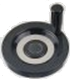

Impostazione dell’origine per gli assi XY
Attenzione! Iniziare la procedura che segue dallo stato di ATTESA, dopo aver comandato un azzeramento degli assi.
Ogni lavorazione è sempre riferita ad una specifica origine degli assi XY; sul telecomando, seguire questa procedura:
 per attivare il movimento manuale degli assi;
per attivare il movimento manuale degli assi; per cambiare la selezione dell’asse;
per cambiare la selezione dell’asse;
Con il volantino, muovere la punta dell’utensile esattamente sopra il punto che deve corrispondere alla posizione X=0 e Y=0; per aggiornare la posizione iniziale dell’asse selezionato; sul display la seconda riga deve mostrare il valore Xo 0.000, dove Xo indica l’origine; nella prima riga il valore Xc (= corrente) indica la distanza tra la posizione corrente dell’asse e quella di Home.
per aggiornare la posizione iniziale dell’asse selezionato; sul display la seconda riga deve mostrare il valore Xo 0.000, dove Xo indica l’origine; nella prima riga il valore Xc (= corrente) indica la distanza tra la posizione corrente dell’asse e quella di Home.